Scientific Classification
| Kingdom | Animalia | Animalia | Animalia |
|---|---|---|---|
| Phylum | Arthropoda | Animalia | Animalia |
| Unranked | Artiopoda | Animalia | Animalia |
| Subphylum | Trilobitomorpha | Animalia | Animalia |
| Class | Trilobita | Animalia | Animalia |
Taxonomic note: Trilobites are an extinct-on-Earth clade of arthropods belonging to the broader arthropod radiation and are among the earliest complex animals introduced to Kaimere through the Portal. On Kaimere, four major Earth trilobite lineages were introduced during the earliest Harvests, and the absence of established multicellular competitors allowed them to undergo an extraordinary adaptive radiation.
01 · INTRODUCTION
Overview
Trilobites are among the oldest and most successful animals introduced to Kaimere, and their history on the planet extends from the earliest stages of the first Earth harvests to the modern ecosystems of the Known World. Originally a diverse Paleozoic radiation of marine arthropods on Earth, trilobites arrived on Kaimere during the earliest harvesting period, when the Portal began introducing organisms from Earth's Late Devonian and Early Carboniferous environments. They were consequently among the first complex animals to establish persistent populations on the planet.
On Earth, trilobites were overwhelmingly marine benthic animals. Their characteristic three-lobed, mineralized exoskeleton allowed them to crawl across the seafloor, burrow through sediment, scavenge, graze, filter-feed, and hunt other small organisms. Their development was governed by repeated molting. Young trilobites began life in a larval condition and eventually molted into a miniature version of their adult body, after which successive molts added segments and increased overall size. This basic developmental pattern remained fundamental to their biology on Kaimere, although the ecological opportunities of their new world allowed the lineage to explore body plans and habitats never achieved by their terrestrial relatives on Earth.
The circumstances of Kaimere were unusually favorable for trilobites. During the planet's earliest terraforming, there were no native multicellular animals competing with the newly introduced Earth fauna. Native life consisted primarily of microscopic organisms, while the growing populations of terrestrial and marine microorganisms provided an enormous nutritional foundation. As the marine ecosystem became increasingly productive, trilobites underwent an extraordinary adaptive radiation. Their fossil record suggests that they became among the most abundant animals in the early oceans, although the exceptional preservation of their mineralized exoskeletons undoubtedly exaggerates their representation in some formations. Even with this bias considered, their abundance was remarkable. More than a thousand trilobite species have been named from the Known World alone from some intervals of Kaimere's early history.
The success of Kaimeran trilobites was not limited to their original marine lifestyle. During the Greening of Kaimere , when the rapid establishment of terrestrial plants and fungi released enormous quantities of nutrients into the waterways, most marine ecosystems experienced catastrophic eutrophication. Algal and magical blooms devastated shallow seas and freshwater systems, eliminating the majority of Kaimere's trilobite lineages. Two major lineages, the harpids and proetids, survived. From the latter came one of the most remarkable evolutionary developments in the history of the group: trilobites that adapted to freshwater and eventually to life on land.
Kaimere's trilobites therefore represent much more than a surviving branch of an ancient Earth lineage. They constitute a radiation that repeatedly reinvented the traditional trilobite body plan. They became burrowers, reef grazers, detritivores, filter feeders, freshwater inhabitants, terrestrial scavengers, specialized herbivores, abyssal decomposers, and enormous seagrass grazers. Modern Kaimeran trilobites remain overwhelmingly proetid, but their diversity demonstrates how extensively an ancient arthropod lineage can evolve when presented with ecological opportunities unavailable in its original world.
02 · DEEP TIME
Evolutionary History
Arrival During the First Harvests
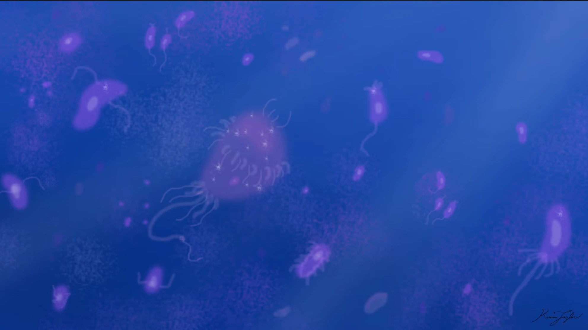
The ancestors of Kaimere's trilobites were introduced during the earliest harvests from Earth, corresponding approximately to Earth's Late Devonian and Early Carboniferous. This occurred while Kaimere was still being transformed by the Portal and its associated microbial and biological introductions. Terrestrial ecosystems were poorly developed, while marine environments were already becoming highly productive through the interaction of native magic and introduced plankton.
The first trilobites consequently entered a world with enormous ecological potential. Unlike Earth, where trilobites had spent hundreds of millions of years competing with an established marine fauna, Kaimere's multicellular ecosystem was effectively empty. Native organisms were overwhelmingly microscopic, leaving animals larger than roughly a centimeter with very little direct competition.
As the marine food web expanded, trilobites rapidly occupied the newly available ecological space. Their populations increased enormously, and their species diversity soon surpassed anything seen during their greatest periods of diversity on Earth. Fossil formations from early Kaimere are often dominated by trilobite remains. Although this abundance is partially attributable to the excellent fossilization potential of their mineralized exoskeletons, the sheer frequency of their remains indicates that trilobites genuinely became among the most abundant animals in the early marine ecosystem.
The exact extent of this initial radiation is impossible to determine because the earliest fossil record is fragmentary. More than a thousand trilobite species have nevertheless been named from the Known World alone, and this represents only a fraction of their presumed global diversity.
The Four Founding Lineages
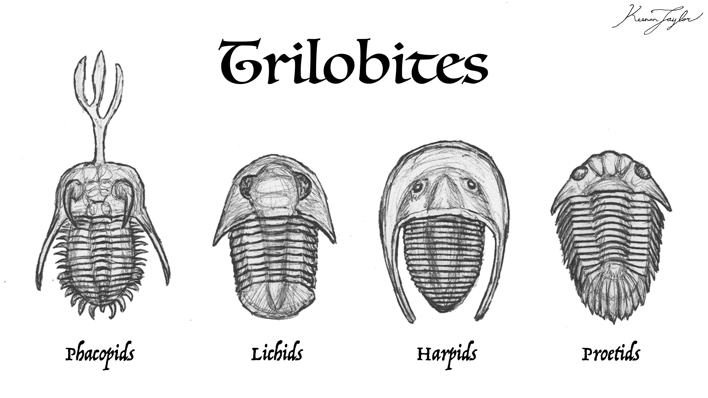
The first Kaimeran trilobite radiation consisted of four major lineages. Phacopids became the dominant trilobites of shallow coastal waters. Their sophisticated compound eyes gave them an advantage in detecting predators and competitors, and within approximately a million years they had undergone an extensive radiation. Some developed elaborate cephalic ornamentation that was used in competition for feeding territories and other resources. At their height, phacopids represented nearly seventy percent of Kaimere's trilobites.
Lichids were distinguished by their exceptional defensive capabilities. Although all trilobites possessed some ability to enroll their bodies, lichids could form an unusually complete defensive ball, leaving very little of the vulnerable underside exposed. Many species also possessed elaborate spines that made them difficult for predators to swallow. Their combination of armor and spines allowed them to flourish alongside increasingly diverse predators.
Harpids occupied a different ecological niche. Their broad, elongated cephalons were well suited for disturbing and sifting sediment, allowing them to feed upon microorganisms and organic material within the seafloor. Although some species inhabited shallow environments, harpids became increasingly associated with deeper waters, perhaps reducing competition with the dominant coastal trilobites.
Proetids were generally smaller and less specialized than the other three founding lineages. Rather than competing directly with their larger and more abundant relatives, they increasingly exploited marginal habitats and burrowing lifestyles. Some became especially common along relatively nutrient-poor leeward coasts, where competition from larger trilobites was reduced. Despite being the least abundant of the four founding groups, proetids still reached enormous absolute populations.
The Greening of Kaimere
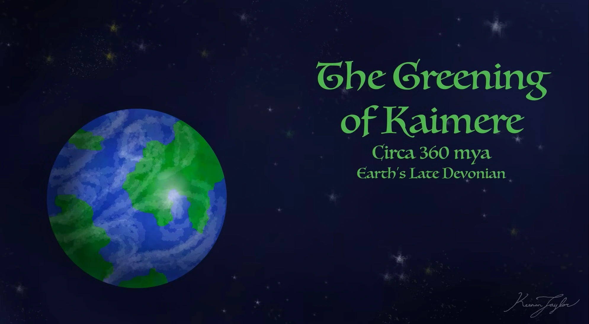
The first trilobite dynasty ended with the ecological catastrophe known as the Greening of Kaimere. The rapid establishment of forests and terrestrial vegetation resulted in enormous quantities of nutrients being washed into rivers, lakes, and shallow seas. Algal and magical blooms proliferated, eventually transforming large portions of the marine environment into toxic, oxygen-depleted systems dominated by decay.
The consequences were catastrophic. Most aquatic organisms disappeared, including the overwhelming majority of Kaimere's trilobites. Yet two lineages survived: harpids and proetids. The survival of harpids remains poorly understood. Their increasing specialization toward deep water may have provided refugia from the worst effects of the ecological collapse. Deep-water populations could have survived while currents and isolated marine environments preserved enough habitable conditions for reproduction. Their subsequent rarity in shallow-water fossils suggests that deep-water refugia may indeed have played an important role in their survival. Proetids followed a very different evolutionary path.
The Origin of Terrestrial Trilobites
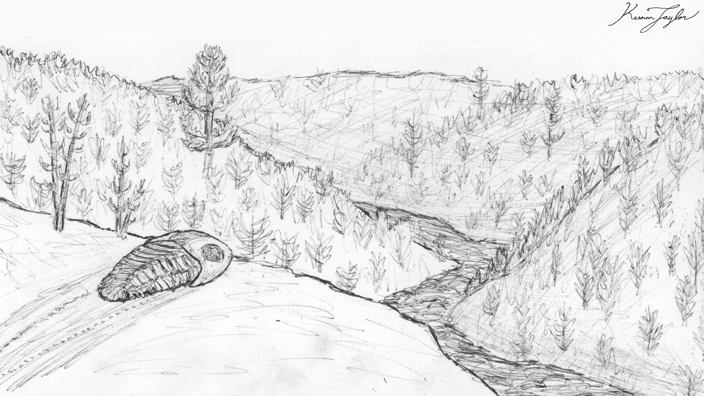
As the oceans and rivers became increasingly hostile, some proetid populations began exploiting environments along the margins of freshwater systems. These animals were probably not fully terrestrial at first. They may have originated from freshwater populations or from coastal and tidal species that increasingly spent extended periods outside the water.
The transition to land presented a major physiological challenge. Like other arthropods, trilobites originally possessed respiratory structures derived from the limbs. Their gills were associated directly with the coxae of their walking legs, with the exopod supporting the respiratory surface while the endopod functioned primarily in locomotion. This arrangement was highly effective underwater because the movement of the limbs continuously circulated oxygenated water across the respiratory surfaces. On land, however, exposed gills risked rapidly drying.
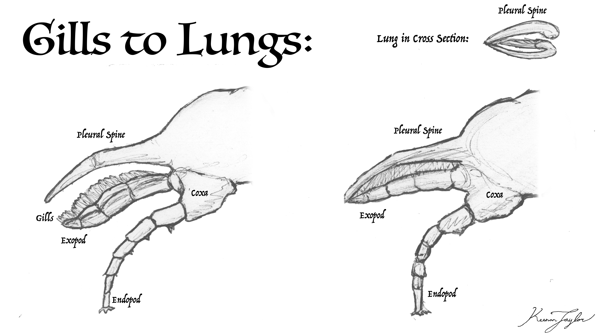
The first terrestrial trilobites appear to have overcome this problem through a remarkable modification of their existing anatomy rather than by completely replacing their gills. The coxa became shorter and broader, increasing flexibility between the respiratory and locomotor structures. The exopod folded inward along its outer margin, producing a roughly J-shaped cross-section. The elongated outer edge rested against the posterior edge of the cephalon or thoracic segments, forming a partially enclosed respiratory chamber. This arrangement helped retain moisture around the gills while allowing air to enter through the opening created by the folded exopod. The chamber could remain relatively sealed while the trilobite was stationary and could open and close slightly as the animal walked, maintaining ventilation.
Early terrestrial trilobites were probably still amphibious. They likely required periodic access to water and may initially have returned to aquatic environments for reproduction. However, Kaimere's hot and exceptionally humid climate provided conditions under which damp air and frequent rainfall could substitute for permanent aquatic living. As terrestrial ecosystems expanded, natural selection increasingly favored individuals capable of spending longer periods away from water.
By the later First Dynasty, genuinely terrestrial trilobites had become established. During the ecological collapse of the Greening, some terrestrial lineages apparently became more abundant than their marine relatives, demonstrating the extraordinary success of this evolutionary transition. No trilobite on Earth is known to have achieved an equivalent terrestrial radiation.
The First Dynasty
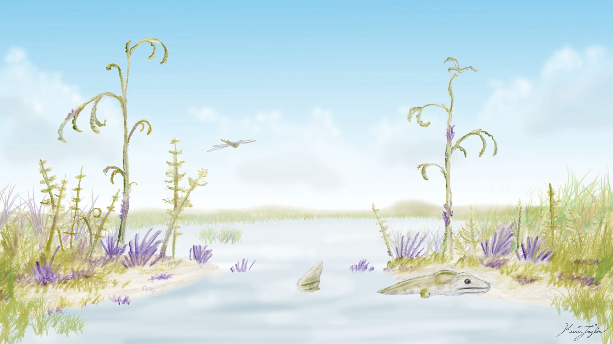
The establishment of terrestrial forests and swamps initiated the First Dynasty, a period characterized by tremendous terrestrial productivity and increasingly diverse freshwater ecosystems. While marine biodiversity recovered more slowly, terrestrial and freshwater trilobites diversified rapidly.
Proetids became the principal survivors and subsequently the foundation of most later Kaimeran trilobite diversity. Freshwater and terrestrial forms exploited the enormous ecological opportunities created by the forests and wetlands, while marine populations diversified as the oceans recovered.
This period also saw the emergence of numerous lineages that would later become important components of Kaimere's trilobite fauna. Among them were early representatives of Plumicauda and Arthrocantha, although the modern families recognized within these groups would not appear until considerably later.
Trilobites also became exceptionally useful geological indicators. Their rapid evolutionary turnover meant that individual species and clades could appear, diversify, and disappear within relatively short geological intervals. As a result, the presence of particular trilobite species can often be used to approximate the age of Kaimeran sediments and, in some cases, to identify the approximate timing of later harvests.
The Permian Dynasty

The end of the First Dynasty was marked by an asteroid impact approximately 255 million years ago. Climatic deterioration and increasing aridity had already reduced the extent of the lush ecosystems in which many trilobites had flourished, and the impact eliminated much of the remaining diversity.
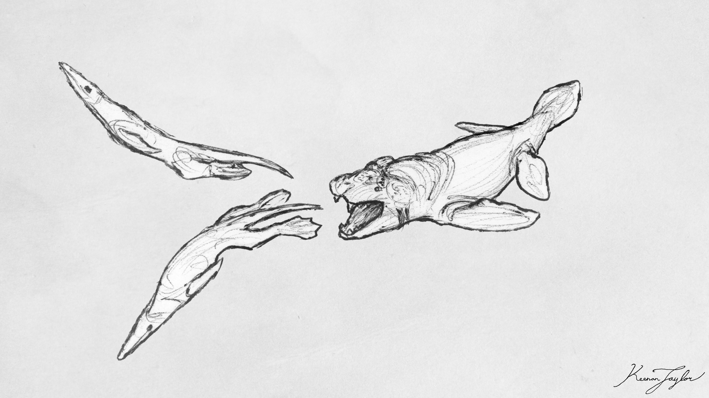
The resulting Permian Dynasty was comparatively poor in terrestrial trilobite diversity, but the marine environment became extraordinarily productive. Cold, nutrient-rich waters and continental movement supported an enormous marine food web, creating what is sometimes called Kaimere's Age of Sea Monsters.
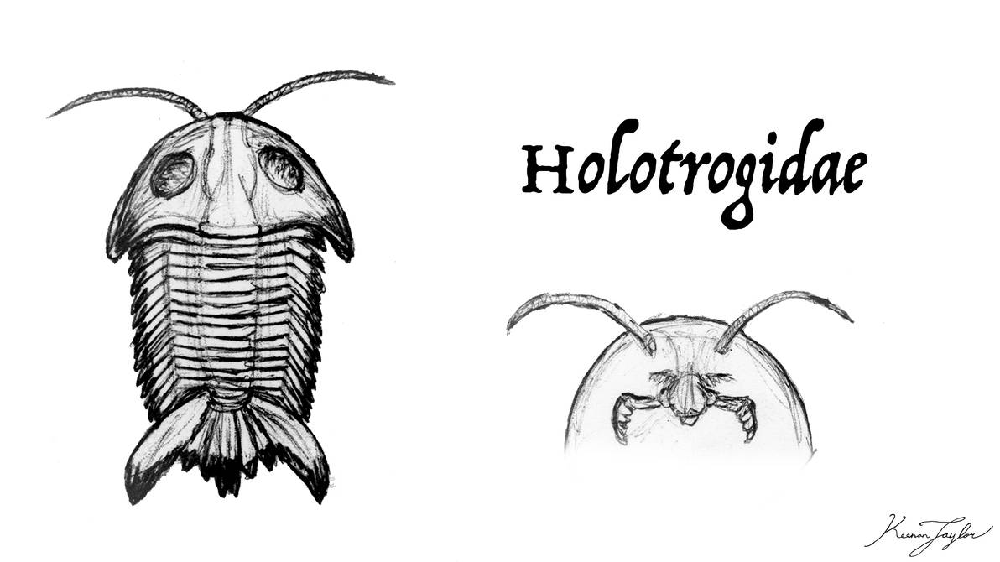
Holotrogids, early members of the Plumicauda lineage, became the dominant trilobites of the period. They had not been especially abundant during the First Dynasty, but their existing diversity allowed them to rapidly exploit the ecological vacancies created by the extinction.
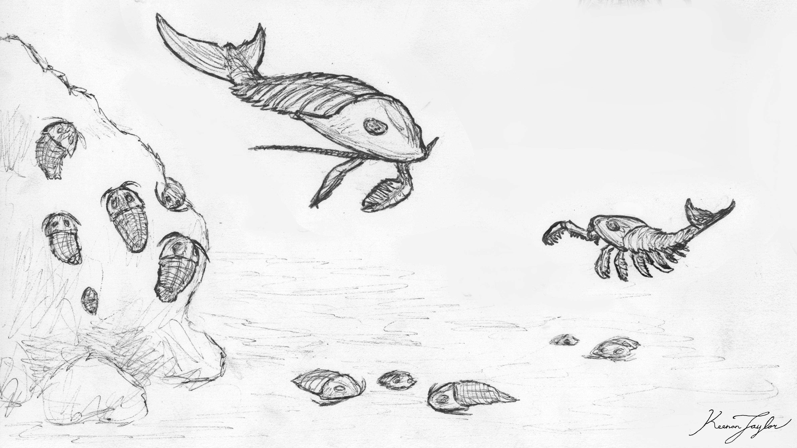
Holotrogids occupied an extraordinary range of niches. Some fed on algae growing on reefs and rocks, others specialized in sediment-dwelling worms, and some became open-water filter feeders. One particularly unusual radiation even became macropredatory, specializing in hunting other trilobites.
The subsequent climatic and ecological transformations toward the end of the Permian eventually eliminated the holotrogids from the Known World. Their extinction opened another major ecological opportunity for other trilobite lineages.
The Mesozoic Dynasties
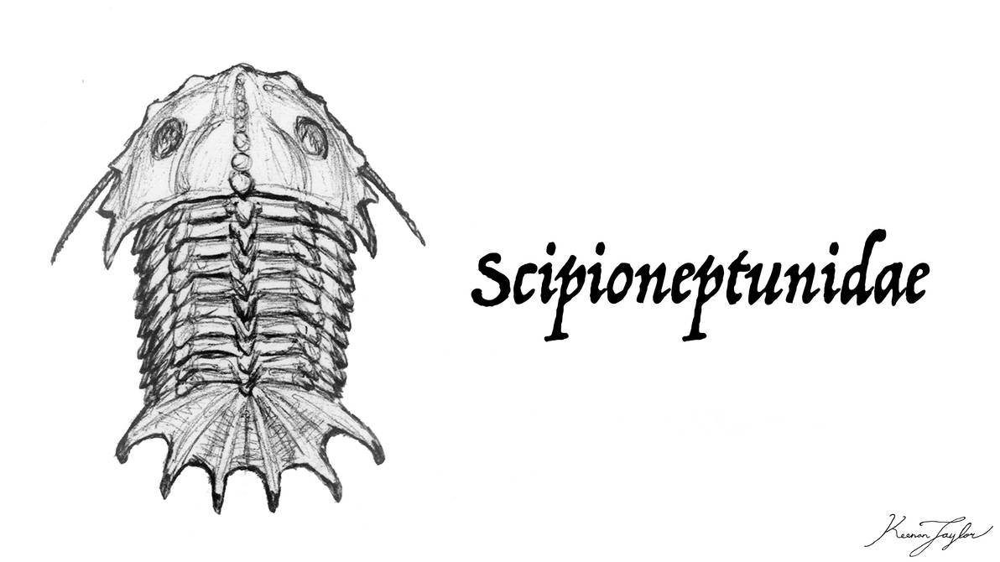
Following the disappearance of the holotrogids, Arthrocantha became one of the dominant trilobite lineages. The scipioneptunids were particularly successful, possessing heavily armored bodies and the ability to roll into a compact ball surrounded by defensive spines. The Mesozoic dynasties also saw extensive diversification among the ancestors of modern trilobite families. Harpids experienced a major radiation during the first Cretaceous dynasty, although they remained primarily associated with deeper marine environments. Terrestrial trilobites continued to diversify alongside their aquatic relatives. As Kaimere's forests, wetlands, and other terrestrial ecosystems changed through successive dynasties, proetid lineages repeatedly adapted to new ecological opportunities.
The Dynastic Extinction and Modern Trilobites
The Dynastic Extinction approximately 15 million years ago devastated the Known World's marine and terrestrial ecosystems. Most native trilobites disappeared. Subsequent immigration from surrounding regions allowed trilobites to recolonize the Known World. But the most promient trilobite clades that maintained any foothold are the proetids, and harpids.
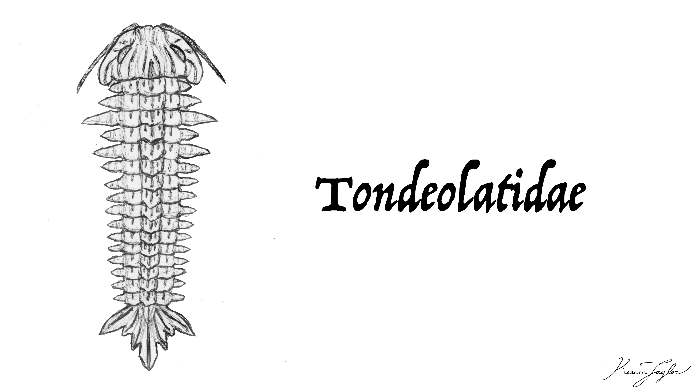
By approximately 10 million years ago, all six modern proetid families had established populations there. The formation of the Trakaiam Sea approximately eight million years ago created another major evolutionary opportunity. By six million years ago, the shallow seaway had developed into the extensive seagrass ecosystem that characterizes it today. The abundance of seagrass drove a spectacular radiation of trilobites specialized for grazing and processing plant material.
The most dramatic example is the Trakaiam shearflank which can reach approximately four meters in length. Its extraordinary size is regarded as a product of the unusually productive seagrass meadows and is not representative of its entire lineage.
Most other members of its clade are less than half a meter long. The modern trilobite fauna therefore represents the cumulative result of hundreds of millions of years of repeated extinction, recolonization, and adaptive radiation.
03 · Diversity of the Trilobites
Clades
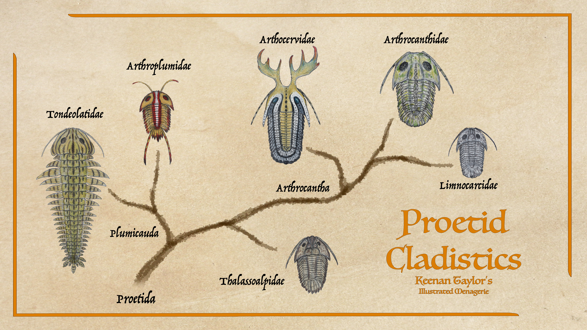
Trilobites are an ancient clade of arthropods distinguished by their heavily mineralized exoskeleton and characteristic division of the body into three longitudinal lobes. The name "trilobite" refers to this three-lobed organization rather than to three major body segments. Their bodies are divided primarily into a cephalon, thorax, and posterior terminal region, while the thorax itself consists of repeated articulated segments.
The first Kaimerean trilobites belonged to four major Earth lineages introduced during the earliest harvests: the Phacopida, Lichida, Harpida, and Proetida. All four underwent substantial diversification after their arrival, although their success was highly unequal. Phacopids initially became the dominant shallow-water trilobites, eventually accounting for an estimated seventy percent of Kaimere's trilobite fauna in some periods. Their sophisticated eyes appear to have provided an important advantage in environments containing increasingly diverse predators and competitors. Lichids were particularly well defended, with many species possessing heavily spined carapaces and an exceptional ability to enroll the body into a nearly completely sealed defensive ball. Harpids became primarily sediment-processing and deep-water forms, while proetids ultimately became the dominant surviving lineage.
The modern Known World fauna is considerably less taxonomically diverse at the highest level. Most living trilobites belong to the Proetida, which underwent an enormous series of adaptive radiations after the extinction of the other major Paleozoic lineages. Three major modern proetid clades are recognized in the Known World: Plumicauda, Thalassotalpa, and Arthrocantha.
Plumicauda is characterized by highly modified posterior structures and, more importantly, by specialized modifications of the first pair of limbs and their associated gills into complex feeding apparatuses. Different plumicaudans have adapted these structures to different food sources. Arthroplumid forms use them to scrape algae from reefs, while tondeolatids use them to harvest and process seagrass.
Thalassotalpa is represented today primarily by the mole trilobites of Thalassotalpidae. These are small, highly speciose burrowing animals that inhabit sandy substrates, seagrass bases, and some reef environments. Their modern radiation is relatively recent compared with the immense antiquity of the lineage. Their ancestors were represented by the karabolagoumids, which became extraordinarily abundant during the First Dynasty before declining as climate and sea levels changed.
Arthrocantha contains many of the most familiar larger trilobites of the modern Known World. The meadow trilobites are heavily armored generalist detritivores, while the arthrocervid or “elk” trilobites developed elaborate cranial structures used in competition between individuals. Some species possess enormous branched horns and engage in jousting contests. These forms demonstrate the extent to which sexual selection has influenced the trilobite body plan.
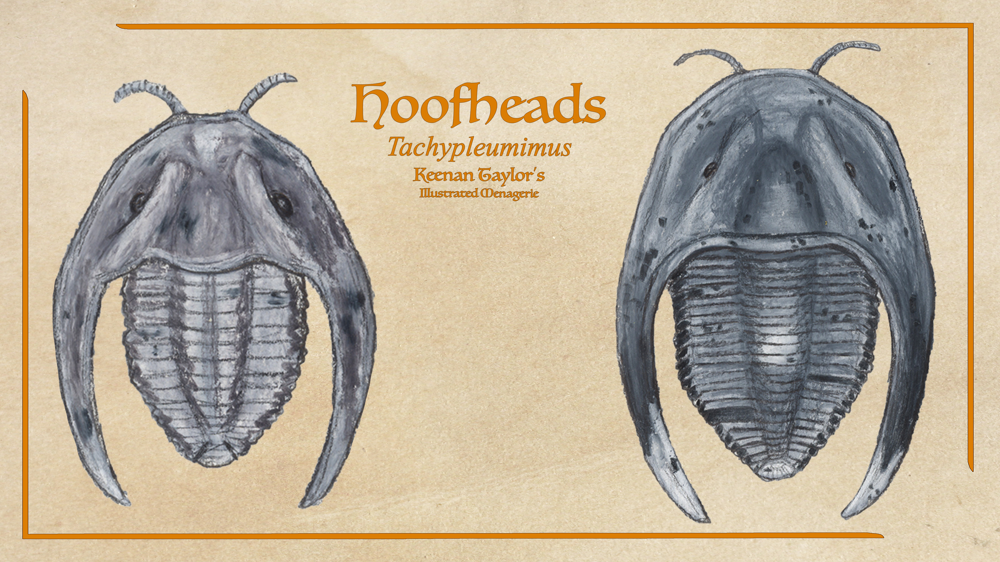
Harpids survive as a much smaller component of the modern fauna. Most Kaimeran harpids are inhabitants of the deep ocean, where they act as important decomposers of abyssal sediments and whale falls. The hoofhead trilobite, Tachypleumimus hades, is the best-known species in the Known World, occurring in the cooler and somewhat deeper waters of the Khalin Sea. A related abyssal species, Tachypleumimus troglodytes, is among the most abundant trilobites recorded from the deep sea south of the Known World.
The precise classification of several unusual Kaimeran trilobites remains uncertain. The pearlbug of Kaishel, for example, has been proposed as a surviving lichid lineage because of its superficial resemblance to certain ancient lichids. Other anatomists consider it more likely to be a highly derived proetid, perhaps related to the extinct Scipioneptunids. Because no confirmed living lichid exists with which it can be directly compared, its ancestry remains unresolved. The pearlbug therefore illustrates one of the difficulties of reconstructing the evolutionary history of Kaimerean trilobites after hundreds of millions of years of independent diversification.
All known terrestrial trilobites of Kaimere are derived from proetid lineages. Their terrestrial radiation represents one of the most unusual evolutionary developments in the entire history of the group. The earliest terrestrial species were probably amphibious and remained dependent upon water to some degree. Over time, however, their respiratory anatomy became increasingly specialized for maintaining moist gills in atmospheric conditions. Their modified exopods formed protective respiratory chambers that reduced water loss while still permitting efficient gas exchange. As Kaimere's climate changed, different terrestrial lineages became increasingly independent of permanent aquatic habitats. Some remained associated with humid forests and swamps, while others entered much drier environments. Modern terrestrial trilobites occur throughout the Known World and occupy a wide range of ecological niches. Most are detritivores, but some have become specialized herbivores or decomposers.
04 · SPECIES ACCOUNTS
Known Diversity
The following accounts document representative trilobites recorded in the encyclopedia. Select a species to consult its individual natural history and descriptive account.
Shearflank
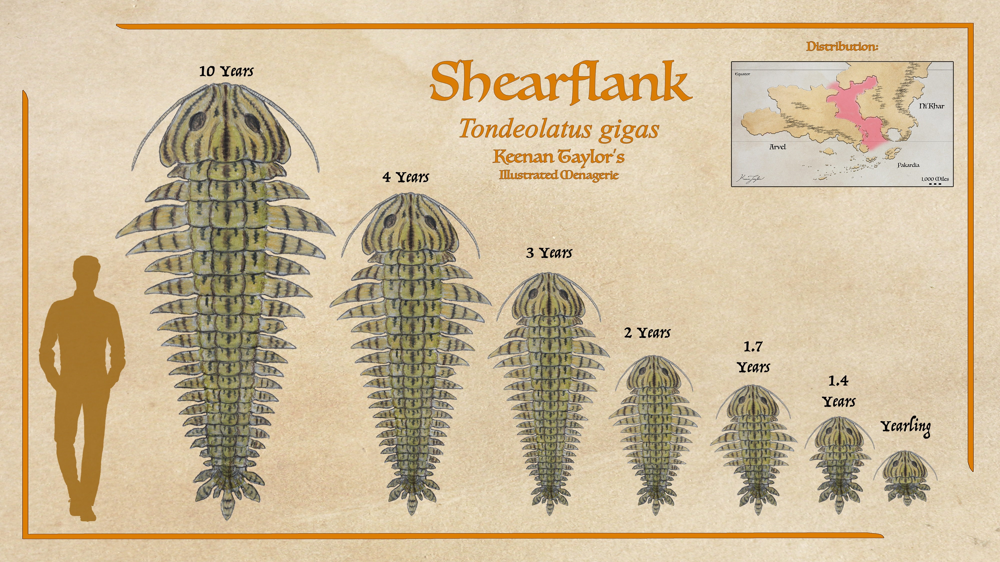
Tondeolatus gigas
The largest trilobite known to the Assembly is the shearflank. These three to four-meter trilobites are the only species in their clade in the known world. They are herbivores, specializing in seagrass, which is the key to their success and size in the habitat. Their great length means they are incapable of rolling up for defense, but the orientation of their pleural spines causes the blades to self-sharpen as they turn, so a lateral curl can deliver a devastating wound that makes most predators avoid them. Shearflank are among the longest-lived trilobites. Most reach adult morphs after a year, adult size at two to three, and generally perish after eight to ten years, though individuals have lived as long as twenty-seven years in captivity.
Read species article →Western Shearflank
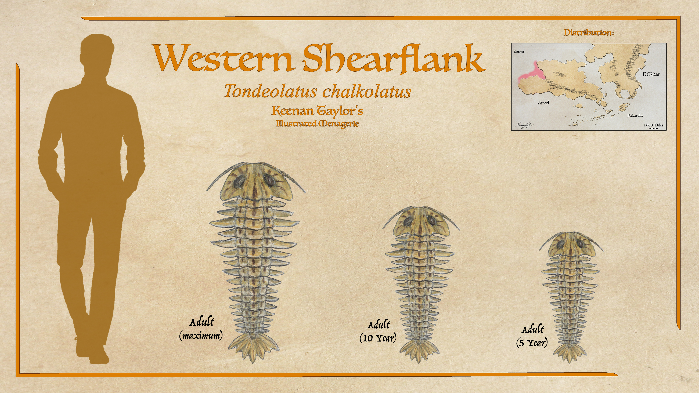
Tondeolatus chalkolatus
The western or Timugai shearflank is the next largest member of the shearflank clade, also in the genus Tondeolatus. Similar to the shearflank of the Known World, these are herbivores that specialize in seagrass. It is believed the comparative scarcity of this habitat in the Gulf of Timugai accounts for the fact that this species is on average around a third the length of their known world cousins. Most other species in this clade are under half a meter. The tremendous size of the shearflank in the known world is inextricably linked to the abundance of seagrass meadows in the Trakaiam. Without it, the species would almost certainly have a similar size restriction as the Timugai shearflank.
Read species article →Red Reef Trilobite
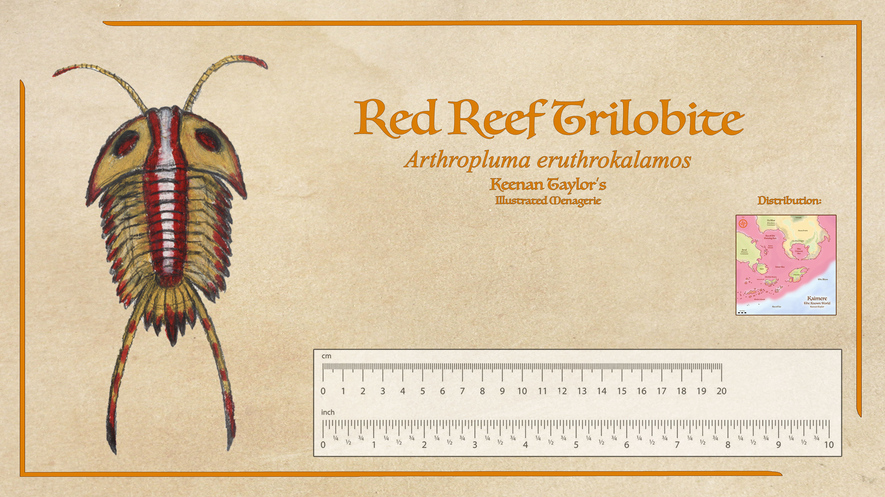
Arthropluma erythrokalamos
Feathered trilobites are named for the long display structures made from the last of their pleural spines. These reef dwellers have extremely dexterous mouthparts and are primarily herbivores, feeding on algae and floral detritus in the reefs and being important in keeping them clean and healthy. They are often quite colorful, with this red reef trilobite being a prime example. The red reef trilobite is an especially prominent one.
Read species article →Common Mole Trilobite
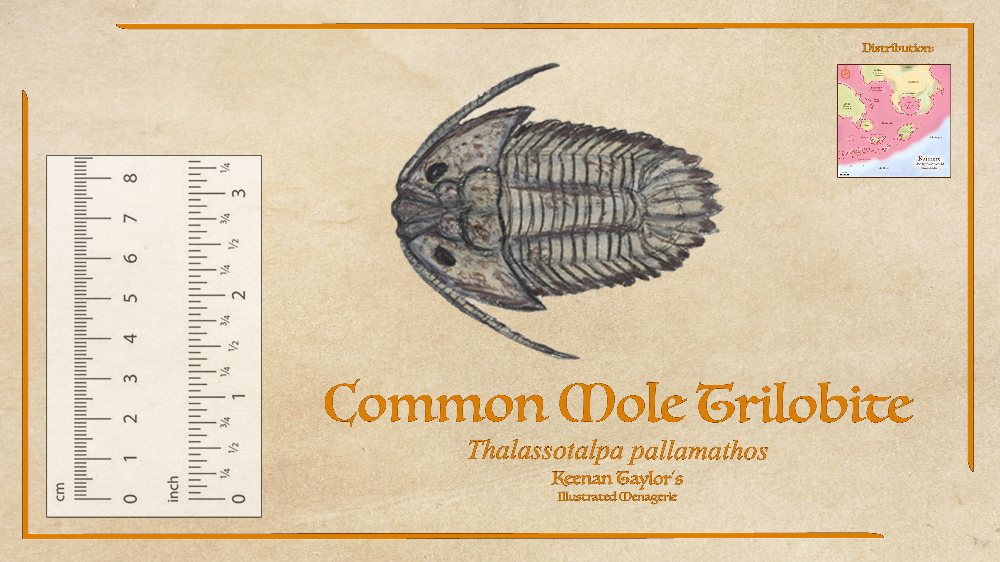
Thalassotalpa pallamathos
Mole trilobites are, as their name suggests, burrowing specialists. The largest species is only five inches or twelve centimeters long, and most are much smaller. They are the most abundant by a substantial margin, though the larger size of meadow trilobites earned them the title of common. Their burrows usually aren't that complex, but the reef clade that bore into corals do have much more complex homes than those who simply dig into the sand or base of seagrass.
Read species article →Moosehead
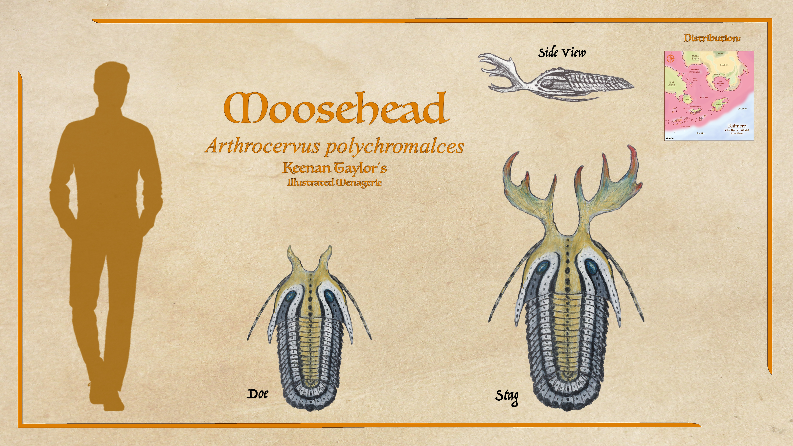
Arthrocervus polychromalces
Deer or elk trilobites take after the unrelated phacopids, with elaborate cranial ornamentation that they use to compete with one another. Though females have fairly uniform hornlets regardless of taxa, the massive many-pronged horns which form a unique shape to the males of each species is the most notable example of sexual dimorphism among trilobites. The largest species tend to have larger and more ornate headgear, which is best exemplified by the moosehead. They engage in impressive jousting matches, often with an effort to flip the loser. Given their headgear, righting themselves can take a few minutes, meaning the winner has plenty of time to corral and move their mates away. Females have small horns which are still fully capable of flipping other arthropods that compete with them, a signal that while the main driving force of these features is for sexual selection, there is an interspecific use for them as well.
Read species article →Meadow Trilobite
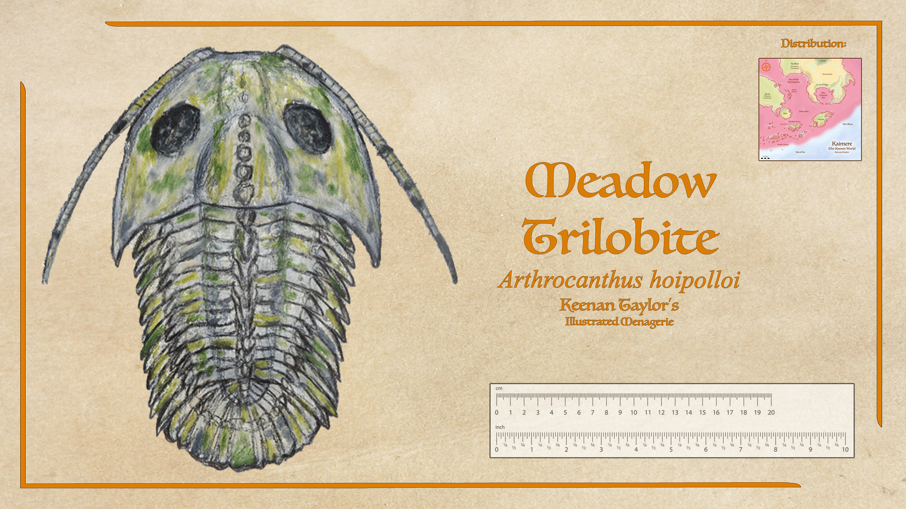
Arthrocanthus hoipolloi
First and best understood are the meadow or common trilobites. These have taken after the lichids in being impenetrable when they roll up thanks to a high number of extremely hard segments. Most have spikes to deter predators swallowing them whole once they are rolled up. The common trilobite is among the most abundant macroarthropods in the inland sea, outnumbered only by blue crabs. They are generalist detritovores, scavenging corpses, consuming dead seagrass, and anything left to rot. Though this gives them a reputation for being unclean to some, Kentarim view them as a delicacy.
Read species article →Pakardiant Pebbleback
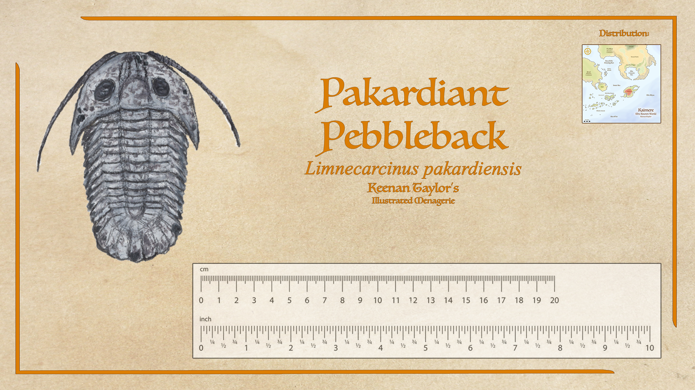
Limnocarcinus pakardiensis
Many trilobite lineages have independently shrugged off their ties to the sea, even though salt water is important for the mineralization of their shells. The river trilobites spend a vast majority of their lives in the river systems of the known world. Some return to estuaries to molt and reproduce, though a few softshell clades don't visit the saline waters at all. These are generally extremely small, less than an inch long, though a few like the Pakardiant pebbleback are the side of a person's hand. All trilobites can spend some time out of the water, though for most it's only for half an hour or so until their lungs dry out. River trilobites can trap moisture near their lungs so they can last for several days. They aren't as free of water as the unrelated terrestrial trilobites back during the First Dynasty, but they can cover a lot of distance in a few days, often wandering several miles between river systems looking for new territory, though if they get trapped in an upland lake, their following molts lead to softshell trilobites. Their shells aren't as soft as the name suggests, but they are not nearly as defensive as their marine cousins.
Read species article →Hoofhead
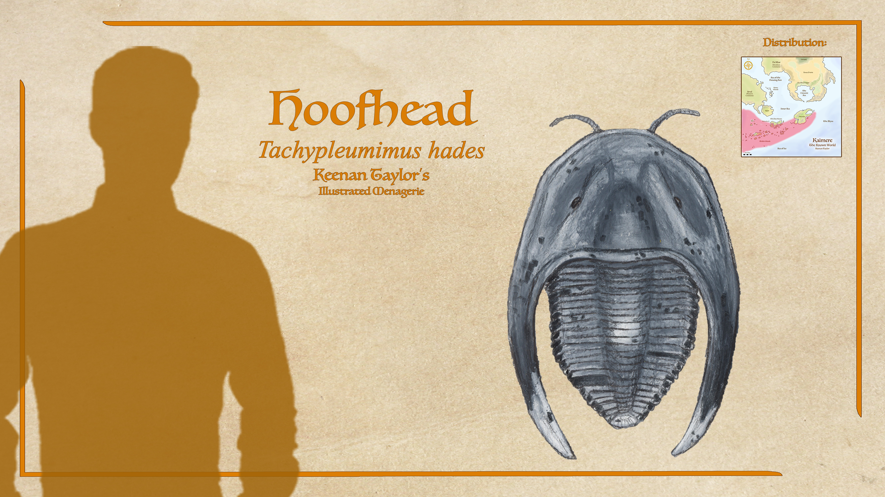
Tachypleumimus hades
Though coastal harpids have been found beyond the known world, it seems their greatest success has been in the abyss. These are not well understood, though they are quite common sights to the few deep-sea investigations by the Assembly, notably at least one giant species which appears to use their size to efficiently travel between whale falls. The lineage commonly encountered in the Known World is the hoofhead trilobite. This species is extremely abundant in the Khalin Sea, preferring these cooler and slightly deeper waters than the inland sea. They are detritovores, far outnumbering the horseshoe crabs which occupy a similar niche. Hoofhead trilobites are a staple in the diets of many Khalin, especially considering the much greater amount of quality meat in their heads compared to the proetid lineages. Some have suggested this may be a harpid which came up from their abyssal sanctuary, but they may be from an undiscovered lineage of coastal residents. The same species is also found in the coastal waters of Kaishel, though it is believed this may be due to larva being carried along the two great currents cycling between the known world and Kaishel rather than both coming up from the abyss.
Read species article →Abyssal Hoofhead
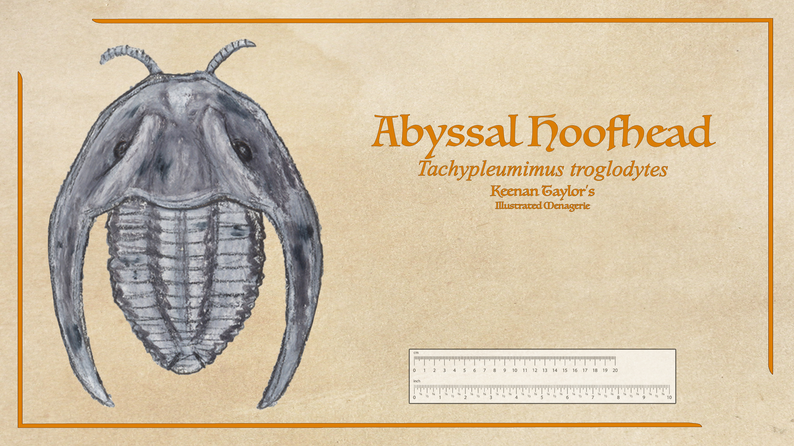
Tachypleumimus troglodytes
The abyssal hoofhead is a species of Tachypleumimus which is most common on the sea floor. There's a fair bit of genetic interchange between this and the hoofheads of the Khalin Sea, no doubt because their offspring get mixed in the currents, though the two populations have a preference for much different waters and are distinct in shape enough that most regard them as separate species. The abyssal hoofhead is, at least according to the albeit limited surveys, the most abundant trilobite in the abyss just south of the Known World.
Read species article →Bronze Quillback
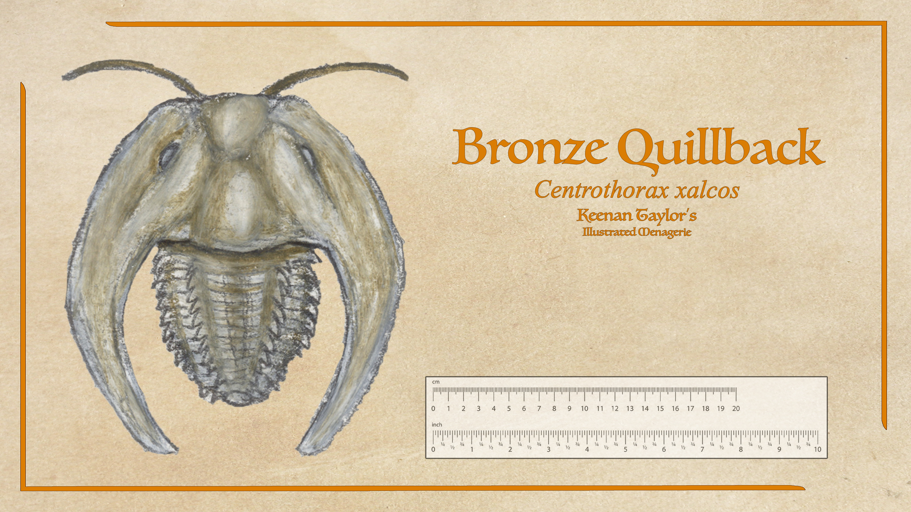
Centrothorax xalcos
The bronze quillback is another abundant species, though their genus is very diverse as well.
Read species article →Giant Beetle Trilobite
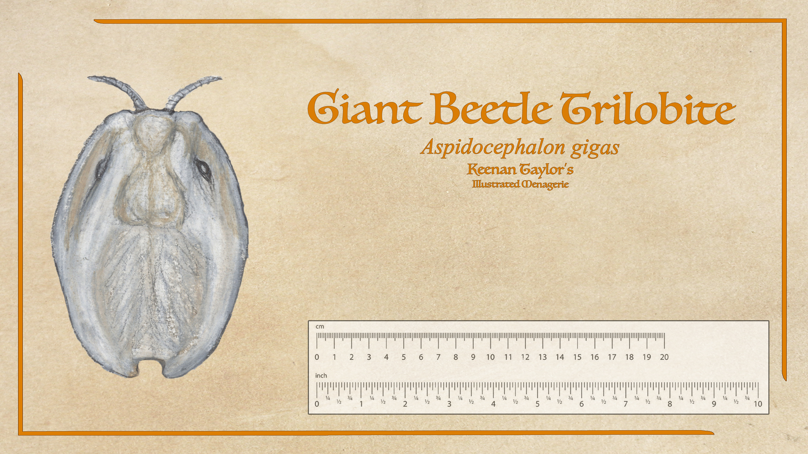
Aspidocephalon gigas
The most derived of this clade is the beetle trilobites. While most harpids are noted for the horseshoe cephalon shape, this clade have a head which entirely envelopes their bodies. This is an extension of the cephalon, not a fusion of their entire bodies, and indeed the underside shows a more basal configuration. There's a lot of overlap on these thorax plates, preventing the shearing jaws of wakakraut from cutting them open. Though not as abundant as abyssal hoofheads, there are many species of this clade and they appear to be more stable in population and resistant to predation. Some are burrowing, but most species like the giant beetle trilobite are safe walking along the sea floor in search of anything organic for them to consume.
Read species article →Goliath Hoofhead
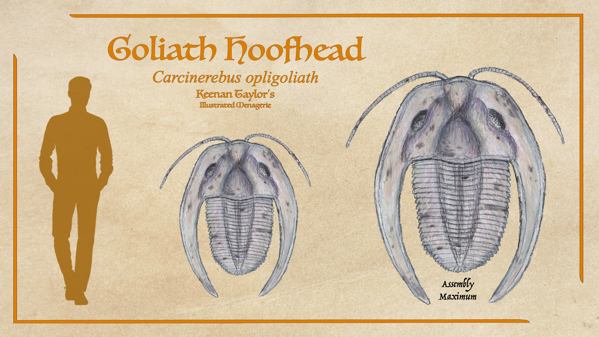
Carcinerebus opliogoliath
The Goliath hoofhead, or Echeluk's Slippers as they are called by the Khalin who occasionally encounter them, are perhaps the largest trilobite in Kaimere. Shearflank of the seagrass meadows are longer, though the largest documented kraken slippers are heavier. It is probable that the known sample sizes don't include the largest specimens. Even larger examples are not out of the question. These travel along the sea floor gathering up debris. Size makes them efficient travelers, and sensitive antennae means they are often among the first to arrive at a whale fall. Though slow growing, their largest members are immune to predation save for the occasional determined horned kraken, and even then their size is usually sufficient defense.
Read species article →Pearlbug
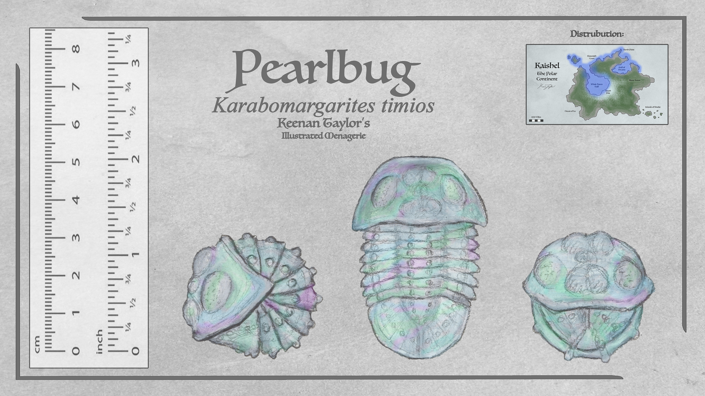
Karabomargarities timios
Like many trilobites, the pearlbug is primarily a scavenger that occasionally hunts much smaller invertebrates. They favor sandy sediment, though are sometimes found on reefs along the subpolar coasts or rocky shores. Their shells are off-white with a striking iridescence of violet, green, and blue. The peoples of Kaishel are said to revere this creature. It curls into a snug ball when threatened, more secure than most other trilobites, and according to the thirdhand sources the Tlaton regard it as an icon of defense and security. It is also an undoubtedly beautiful creature, and its iridescent white shells are found throughout the Known World as high-value currency by Khalin merchants. It is rare for them to make their way to the Known World through Khalin trade networks, but it happens often enough that the Assembly has been able to trade for a fairly substantial collection even though they have been authorized to have precious few research missions to Kaishel.
Read species article →Abehedril
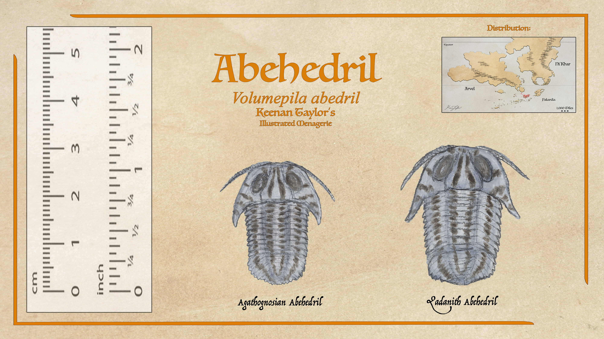
Volumepila abedril
Most abundant terrestrial trilobites are in Qadan and therefore familiar to the Assembly is the abehedril (pronounced AH-beh-dril). This inch long trilobite is, like most of its kind, a generalist detritovore, feeding on just about anything it can process on the forest floor. It is typical for them to be found under fallen logs or really anywhere with ample soil. Amzen, or Roostercrest Island where the Assembly resides, has its own endemic species or subspecies of trilobite: the Agathognosian abehedril. Like it's Qadanith cousin, the Agathognosian abehedril is abundant, found on the forests throughout the island. They are a common symbol of the island, being one of its few endemic fauna found nowhere else in Kaimere.
Read Agathognosian Abehedril article → Read Qadanith Abehedril article →Copperbug
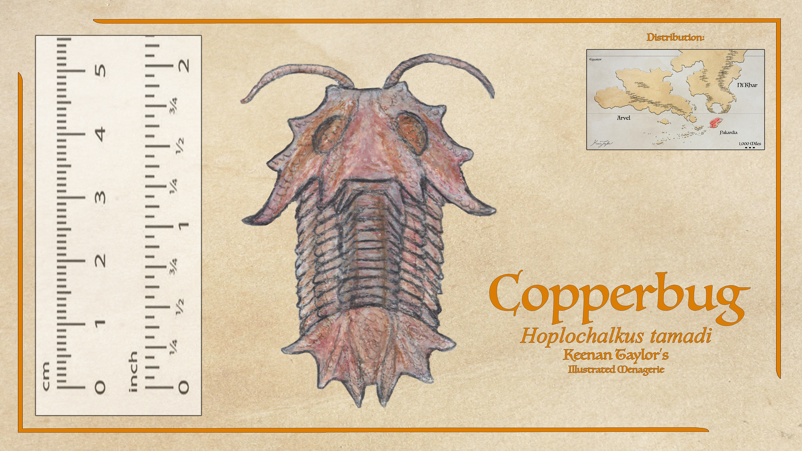
Hoplochalkus tamadi
Many aquatic arthropods mineralize their shells with calcium carbonate. This is harder for terrestrial arthropods to do, though some manage. The Pakardiant genus Hoplochalkus is one such trilobite, doing so to an extreme degree. They molt in the Gulf of Iratame, and collect so much calcium carbonate at this time that their shells develop a hard copper-like exterior. Once rolled up, the copperbug is said to be hard as metal.
Read species article →Teak Arborvore
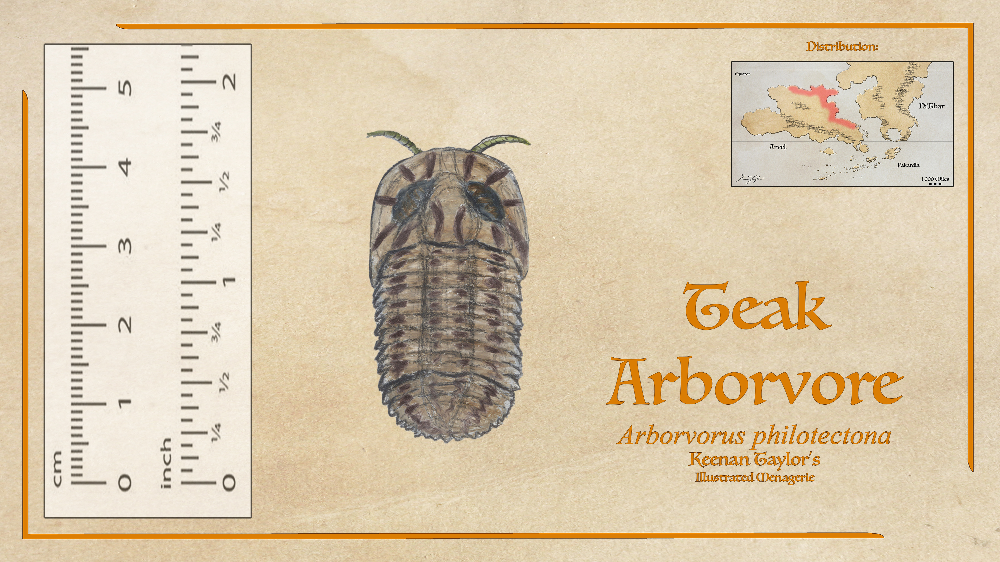
Arborvorus philotectona
Arvel is home to the most species of terrestrial trilobites in the known world. Between the swamps, gardens, and dense jungles, there is abundant habitat for this clade to reside. One family, the Arborvorids, have adapted to eat wood. One example is the teak arborvore a coastal forest trilobite that specialized in Arvelith teak. They usually don't consume living trees, instead processing dead wood. Indeed, they are among the most prolific feeders of dead trees in some areas, arguably considered the most successful herbivores in some regions. This family has spread to most regions of the known world thanks to this habit. They are certainly most abundant and speciose in Arvel, where they seem to have originated. They won't eat treated wood, instead favoring damp rotting lumber, so are generally not considered a pest as long as construction is made with quality, well-prepared lumber. If a house or other structure is in disrepair, arborvorids can quickly become a serious issue.
Read species article →Fire Beetle
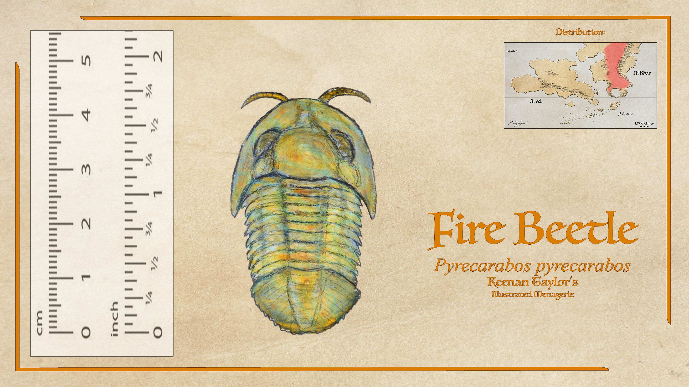
Pyrecarabos pyrecarabos
The fire beetle is the only terrestrial trilobite found in the houze prairie. They are capable of entering a prolonged stasis, which they employ after rolling up as fire passes by. They can remain like this for several days before awakening. Some still perish, but a combination of this stasis and their fire-resistant carapace means they are often quite capable of rebounding after a fire. Indeed, they often thrive in its aftermath, as burned houze grass is quite easy for them to digest.
Read species article →Tabletbug
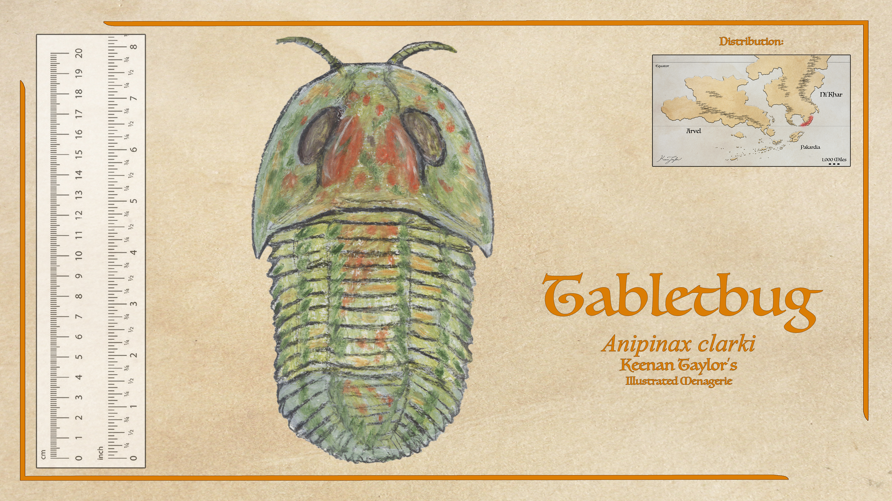
Anipinax clarki
Kaimere's largest terrestrial trilobite is found in the relic rainforests of southeastern Ni'Khar: the tabletbug. They can reach eight inches in the largest known specimens, though most adults are half this length. Little is known of their behavior as this is a poorly-studied region, though their basal anatomy suggests they likely are generalist scavengers that take in the occasional invertebrate. Their size has been proposed to be a product of this being an extremely humid environment, with near-constant showers hammering the coast, though again, this is merely conjecture.
Read species article →05 · CLASSIFICATION
Taxonomic Notes
Trilobites are a clade of arthropods distinguished by their characteristic three-lobed body organization, from which the name Trilobita is derived. Their bodies are divided into a cephalon, a segmented thorax, and a terminal pygidium, with the central axial region flanked by lateral pleural regions. They possessed paired limbs beneath the body, with the appendages serving several functions including locomotion, feeding, and respiration.
The exact placement of Trilobita within Arthropoda has historically been debated. Kaimerean research generally places trilobites outside the three principal arthropod lineages represented by the major surviving groups of arachnids, myriapods, and pancrustaceans, although their closest relationships remain a matter of comparative anatomical study. Their respiratory structures are particularly informative. Trilobite gills are derived directly from the limbs, with the respiratory exopod positioned above the locomotory endopod. This arrangement differs from the respiratory modifications seen in the major terrestrial arthropod lineages and represents an important constraint on the transition of trilobites onto land.
The fossil history of Kaimere is complicated by repeated introductions from Earth. Four major trilobite lineages were introduced during the earliest harvests: phacopids, lichids, harpids, and proetids. All four underwent substantial diversification during the early history of Kaimere, although their subsequent histories were very different. Phacopids and lichids became important components of the early marine fauna but disappeared during the first major ecological crisis. Harpids survived and remain primarily associated with deep marine environments, while proetids became the dominant surviving lineage and produced most of the subsequent diversity.
Modern Kaimerean classification is therefore not simply a continuation of Earth's familiar trilobite taxonomy. Several ancient Earth lineages have disappeared, while surviving Kaimerean populations have diverged into highly distinctive groups. Among the major modern clades of the Known World are Plumicauda, Thalassotalpa, and Arthrocantha, all of which belong to the broader Proetid radiation. Other distinctive populations occur outside the Known World, particularly among the deep-water harpids and the poorly understood Pearlbug of Kaishel.